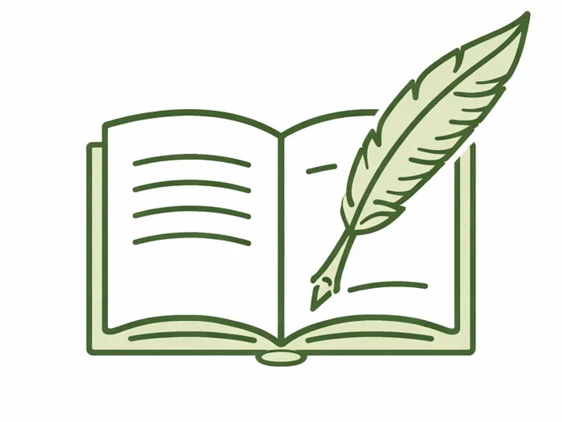
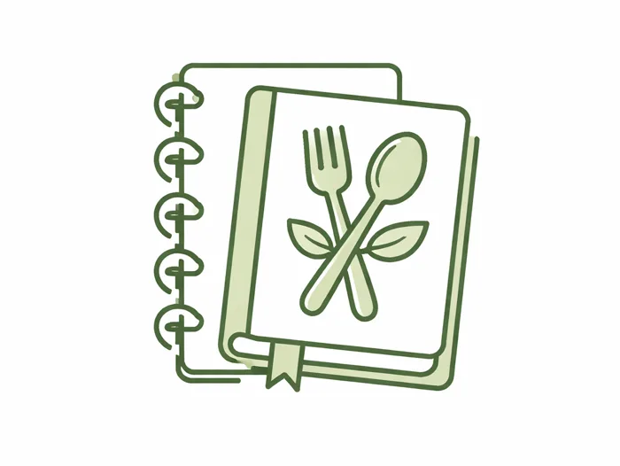

Ein Ort zwischen Geschichten, Gedanken und Magie
Zwischen Büchern entstehen Welten – mal spannend, mal inspirierend, mal voller Fantasie. Die Zwergenbibliothek vereint Geschichten, Ratgeber und kreative Werke, die mit Herz geschrieben und mit Ruhe entdeckt werden möchten. Wähle deinen Weg durch die verschiedenen Buchbereiche und finde genau das, was dich gerade begleitet, inspiriert oder einfach zum Lesen einlädt.
Wähle deinen Weg durch die Bibliothek
Ratgeber & Arbeitsbücher
Impulse, Wissen und praktische Begleiter für eigene Wege
Mehr erfahren →Krimis & Romane
Spannung, Geschichten und Begegnungen voller Wendungen
Mehr erfahren →Kinderbücher & Geschichten
Fantasievolle Erzählungen für kleine und große Leser
Mehr erfahren →Aktuelle Bücher
Willis Adventskalender – Ausmalen & Vorlesen im Advent
Mehr erfahren →50 Kräuter und Gewürze – und alles, was man mit ihnen machen kann
Mehr erfahren →KI und Trading für Anfänger – Das KI-Trading-Arbeitsbuch, Band 3
Mehr erfahren →Die Idee hinter der Zwergenbibliothek
Die Zwergenbibliothek ist aus der Freude am Schreiben und Erzählen entstanden – aus Ideen, die mit der Zeit zu Geschichten und Büchern gewachsen sind.
Jedes Werk trägt ein Stück dieser Reise in sich und lädt dazu ein, für einen Moment einzutauchen und Neues zu entdecken.
Mehr aus der Zwergenbibliothek

Gastautorin & Gastautor
Neue Stimmen und kleine Geschichten entdecken
Mehr erfahren →
Notizbücher & Rezeptbücher
Raum für eigene Gedanken und Lieblingsrezepte
Mehr erfahren →Kontakt
Fragen, Austausch oder Zusammenarbeit
Mehr erfahren →Zwischen den Seiten setzt sich die Reise leise fort,
während die Bibliothek ihre Türen offen hält.